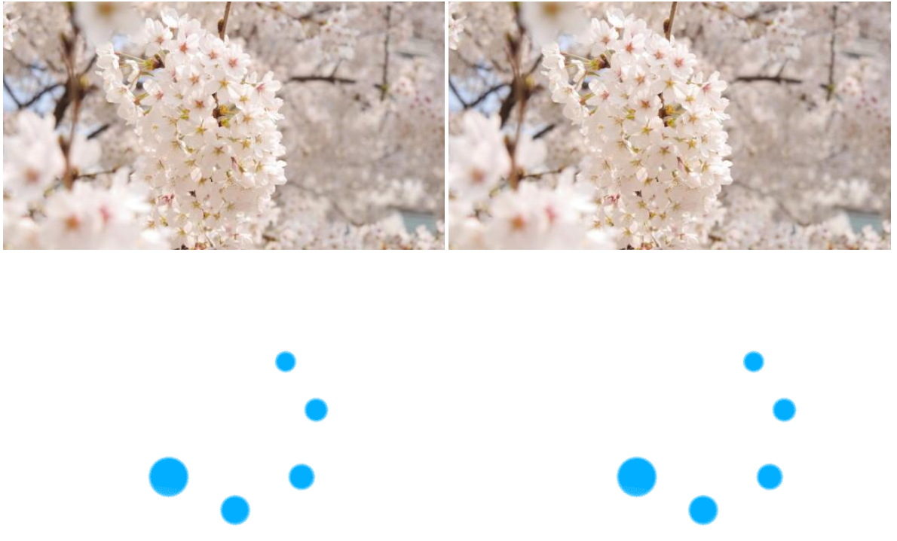

网上查了很多图片懒加载的内容, 但基本上都是jQuery实现的, 没有说清楚其原理, 所以研究了一下
多的不说, 上代码, 看不明白的建议看下我的上一篇文章<1. 图解浏览器和用户设备的宽高等属性>
HTML部分(图片地址自己随意)
<div>
<img data-src="1.jpg" src="0.gif" alt="">
<img data-src="1.jpg" src="0.gif" alt="">
<img data-src="1.jpg" src="0.gif" alt="">
<img data-src="1.jpg" src="0.gif" alt="">
<img data-src="1.jpg" src="0.gif" alt="">
<img data-src="1.jpg" src="0.gif" alt="">
<img data-src="1.jpg" src="0.gif" alt="">
<img data-src="1.jpg" src="0.gif" alt="">
<img data-src="1.jpg" src="0.gif" alt="">
<img data-src="1.jpg" src="0.gif" alt="">
<img data-src="1.jpg" src="0.gif" alt="">
<img data-src="1.jpg" src="0.gif" alt="">
<img data-src="1.jpg" src="0.gif" alt="">
<img data-src="1.jpg" src="0.gif" alt="">
<img data-src="1.jpg" src="0.gif" alt="">
<img data-src="1.jpg" src="0.gif" alt="">
<img data-src="1.jpg" src="0.gif" alt="">
<img data-src="1.jpg" src="0.gif" alt="">
<img data-src="1.jpg" src="0.gif" alt="">
<img data-src="1.jpg" src="0.gif" alt="">
<img data-src="1.jpg" src="0.gif" alt="">
<img data-src="1.jpg" src="0.gif" alt="">
</div>JS部分
/*
思路 1.先将图片地址存在"data-src"中
2.图片出现在页面中就将"src"的地址改变
重点 判断图片是否出现在页面中
1.图片距离页面顶部的高度 + 屏幕高度
2.页面距离顶部被卷起来的高度
*/
//可操作部分(建议使用前测试)
var m = 500; //值越大顶部加载的越多
var n = 0; //值越大加载的越多
//选定img元素
var imgs = document.getElementsByTagName("img");
//判断浏览器的高度
var win_h = window.innerHeight||document.documentElement.clientHeight;
//更换图片
function replace(num){
//不能直接将img的"src"等于"data-src",所以先获取"data-src"的值,然后再添加给"src"
imgs[num].setAttribute("src", imgs[num].getAttribute("data-src"));
}
//页面滚动时判断滚动到位置(出现在视图窗口),进行加载
window.onscroll = function(){
//页面被卷起来的部分的高度
var scroll_top = window.pageYOffset;
//图片距离页面顶部的高度
for (var i = 0; i < imgs.length; i++) {
var c = imgs[i].offsetTop;
//当图片刚好在可视窗口之内时,替换内容
if (c > (scroll_top - m) && c < (scroll_top + win_h - n)) {
replace(i);
}
}
}
//开始页面就要加载一部分图片
window.onscroll();虽然比较啰嗦, 但是内容详细. 希望能帮到大家
最终效果如下:
